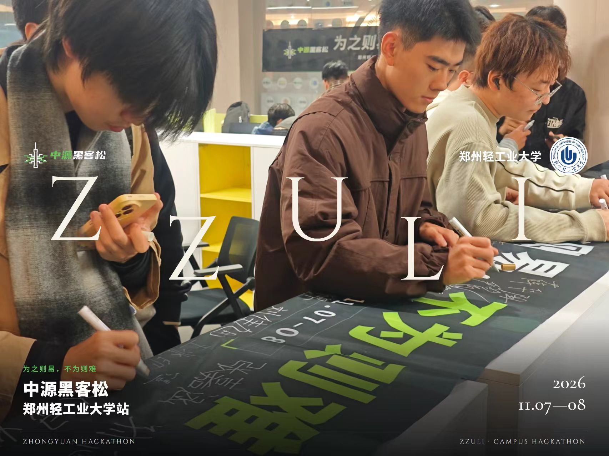
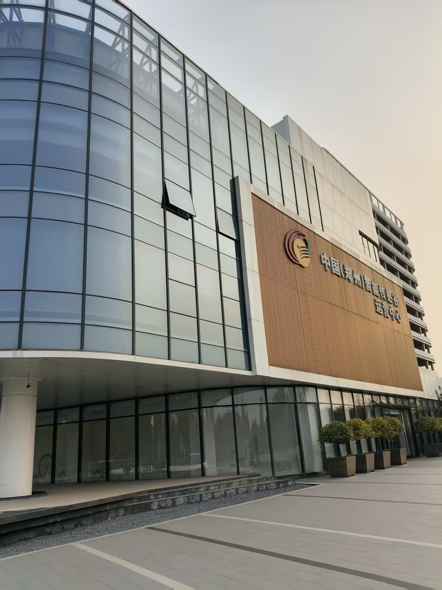

团队协作 · 候选人知识库与工具授权
Resume Protocol
改简历时，每一条经历
都有原文可以核对。
- 我的部分
- 事实溯源、检索隔离、工具授权；AI 辅助补齐修改与导出流程。
React · Node.js · SQLite

先看产品，再看我做了什么。

团队协作 · 候选人知识库与工具授权
改简历时，每一条经历
都有原文可以核对。
React · Node.js · SQLite
开源二次开发 · 检索评测扩展
答案不对，先看证据
在哪一步丢了。
React · Express · pgvector

诗词平台 · 个人贡献模块

中源黑客松 · 郑州轻工业大学站
2026.11.07—08
以组织者之一的身份参与郑轻站活动。和同学、开发者一起，把想法带到现场。
社群身份：中源 AINative Club 会员。
活动地点：中国（郑州）智能传感谷。照片为本人提供的现场素材。
阅读活动终极指南


HarmonyOS · 全栈实践
记录出行、节能与回收行为，查看预计减排、积分和碳树成长。用图表、任务与轻量小游戏连接日常反馈。
我的部分：ArkTS / ArkUI 页面、本地数据与业务逻辑、Node.js 接口沙盒；开发与验证使用 AI 辅助。


以上为 DevEco 原生 Previewer 截图，包含演示数据；不代表真机性能或真实减排成果。
独立开发 · Python
依据学校论文规范制作的 Codex skill，用部件哈希检查模板误改，要求引用与结论有依据。尚未在真实论文上验证。
看论文工具团队协作 · Vue 3
参与前端文件操作、上传状态与接口联调。把团队产品中的个人职责单独说明。
看前端实践记录项目的开发、验证与发布进展。
关于我